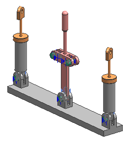
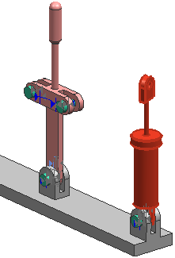
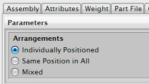

查看装配和子装配结构。

查看顶层装配和子装配的约束。
右击 des02_lever 右边的 des02_piston_assm 并选择属性。
确保您选择了整个子装配，而不仅仅是其中一个组件，可以使用装配导航器或图形窗口中的快速拾取对话框。

您将先定位这个子装配。
在组件属性对话框中，点击参数选项卡。
在布置下方，选择单独定位。
这让您可以从同一个子装配中的其它事例中，单独定位选定的子装配。

点击确定。